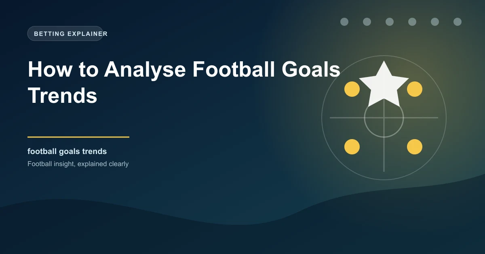

Goals are the currency of football, and understanding how they are scored, when they are scored, and by whom is the foundation of smart betting on goals markets. Analysing goals trends goes beyond simply checking how many goals a team has scored this season. It involves looking at patterns across time, across different match situations, and across different opponents to build a complete picture of a team's scoring profile.
This guide gives you a structured approach to analysing goals trends that you can apply to any league or match.
The most popular football betting markets are goals-based. Over/under goals, both teams to score, correct score, and half-time goals all depend on understanding how goals are likely to be distributed in a match. If you can accurately predict whether a match will produce goals, you have an edge in the majority of available markets.
Goals trends reveal patterns that raw averages miss. A team might average 2.5 goals per match overall, but that average could be driven by a few high-scoring games against weak opponents, with many low-scoring matches against stronger teams. Understanding the distribution, not just the average, gives you a more accurate picture.
Several metrics form the foundation of goals trend analysis. Each one tells you something different about a team's scoring profile.
The most effective way to analyse goals trends is to build a comprehensive goals profile for each team you are betting on. This involves gathering data across multiple dimensions and looking for patterns.
The home/away split is the single most important refinement in goals analysis. The difference between home and away scoring rates is often larger than people expect.
| Team | Home GF | Home GA | Away GF | Away GA | Home O2.5% | Away O2.5% |
|---|---|---|---|---|---|---|
| Brentford | 1.89 | 1.22 | 1.33 | 1.56 | 63% | 44% |
| Bournemouth | 1.67 | 1.44 | 1.22 | 1.78 | 56% | 39% |
Brentford score significantly more at home and concede fewer, with a much higher over 2.5 rate. Betting on over 2.5 goals in Brentford home matches is backed by strong data, while the same bet in their away matches is weaker.
Beyond the raw numbers, goals trends reveal patterns in how and when teams score. These patterns can give you an edge in specific markets.
Goals conceded trends are just as important as goals scored trends. A team that concedes frequently in the first 15 minutes is vulnerable to early goals, making "opponent to score first" a valuable bet. A team that concedes frequently after 75 minutes shows late-game concentration issues, creating value for late goals markets.
Expected goals (xG) is a more sophisticated metric that measures the quality of chances created and conceded, rather than just the actual goals. xG reveals whether a team's scoring rate is sustainable or whether it is being driven by luck.
Betting against Team A (expecting fewer goals) and backing Team B (expecting more goals) is a data-driven approach that often offers value before the market adjusts.
The real value of goals trend analysis comes from applying it systematically to your betting. Before placing any goals-based bet, work through the goals profile of both teams. Check the home/away splits, the over/under percentages, the BTTS rates, and the xG data. Only place the bet when the data supports your thesis.
This discipline will not make every bet a winner, but it will ensure that your bets are grounded in evidence rather than gut feeling. Over time, this evidence-based approach is the difference between profitable and unprofitable betting.
Our Over 2.5 predictions and BTTS predictions use goals trend analysis to identify value across today's fixtures.
 Win
Win